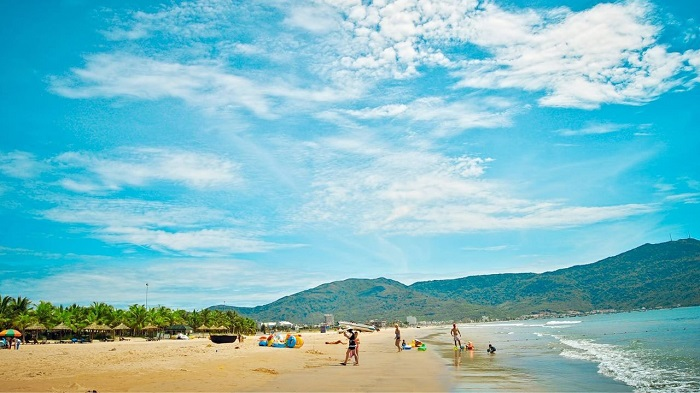
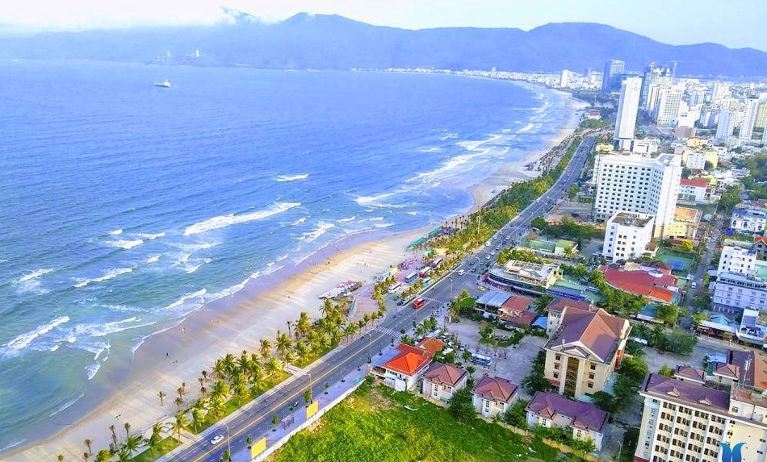

Bãi biển Mỹ Khê Đà Nẵng được đánh giá là một trong những bãi biển quyến rũ nhất hành tinh, là địa điểm du lịch ai cũng nên đến ít nhất 1 lần trong đời. Cùng tham khảo kinh nghiệm đi bãi biển Mỹ Khê Đà Nẵng chi tiết, đầy đủ nhất trong bài viết. Bãi biển Mỹ Khê Đà Nẵng với những bãi cát mịn, trắng trải dài, nước biển trong xanh, sóng êm đềm và nước ấm quanh năm là địa chỉ “xê dịch” bạn tuyệt đối không nên bỏ qua. Biển Mỹ Khê nằm ngay thành phố Đà Nẵng, thành phố du lịch hiện đại, phát triển nên việc du lịch vô cùng thuận tiện, dễ dàng.
Bãi biển Mỹ Khê Đà Nẵng


1. Vì sao bãi biển Mỹ Khê Đà Nẵng là một trong những biển đẹp nhất hành tinh?
Bãi biển Mỹ Khê Đà Nẵng không chỉ được các tín đồ “xê dịch” trong nước yêu mến, còn được các trang báo nước ngoài như tờ Forbes của Mỹ, Sunday Herald Sun của Australia… bình chọn là một trong những bãi biển đẹp, quyến rũ nhất hành tinh.
2. Bãi biển Mỹ Khê ở đâu?
Bạn thắc mắc bãi biển Mỹ Khê Đà Nẵng thuộc quận nào? Biển Mỹ Khê tọa lạc ngay trên cung đường Võ Nguyên Giáp, T20, thuộc phường Phước Mỹ, quận Sơn Trà, cách trung tâm thành phố Đà Nẵng khoảng 3km về phía đông nam. Bãi biển Mỹ Khê có 3 khu vực bãi tắm, có chiều dài khoảng 900m. Còn bờ biển Mỹ Khê trải dài từ chân bán đảo Sơn Trà đến tận Ngũ Hành Sơn, dài khoảng chừng 10km.
3. Di chuyển đến bãi biển Mỹ Khê tại Đà Nẵng như thế nào?
Để đến bãi biển Mỹ Khê, trước tiên, du khách từ các vùng trên cả nước như Hà Nội, TP HCM… di chuyển bằng các phương tiện như máy bay, tàu hỏa, xe khách đường dài… để đến Đà Nẵng bằng. Sau đó, từ sân bay hoặc sân ga di chuyển đến bãi biển Mỹ Khê bằng các phương tiện sau:
- Đi bằng phương tiện cá nhân
- Taxi
- Xích lô
- Xe buýt